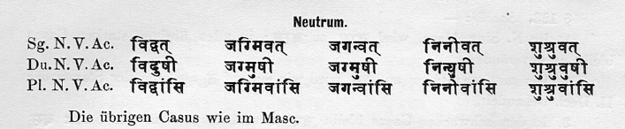
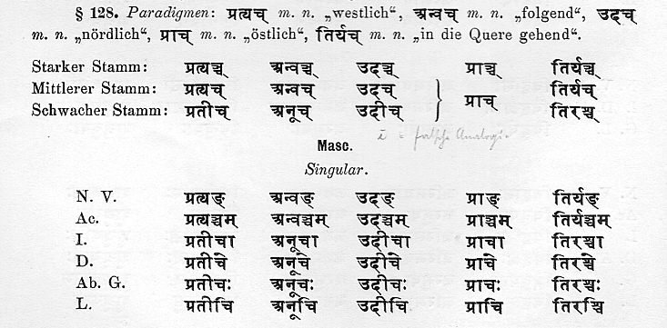
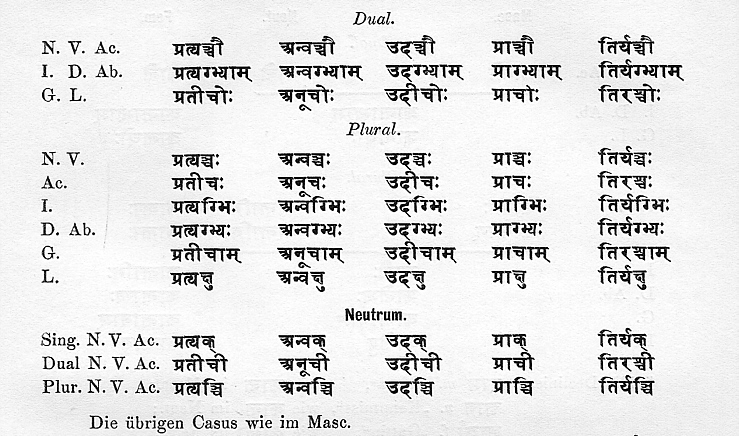
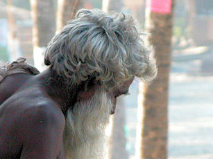
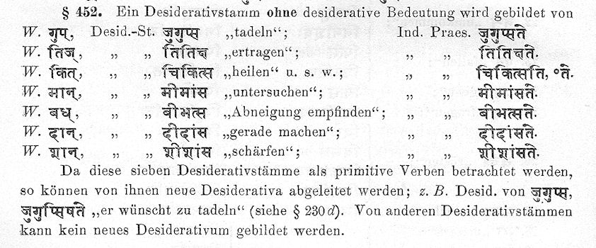
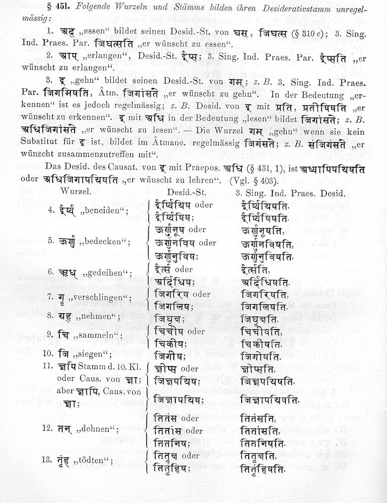
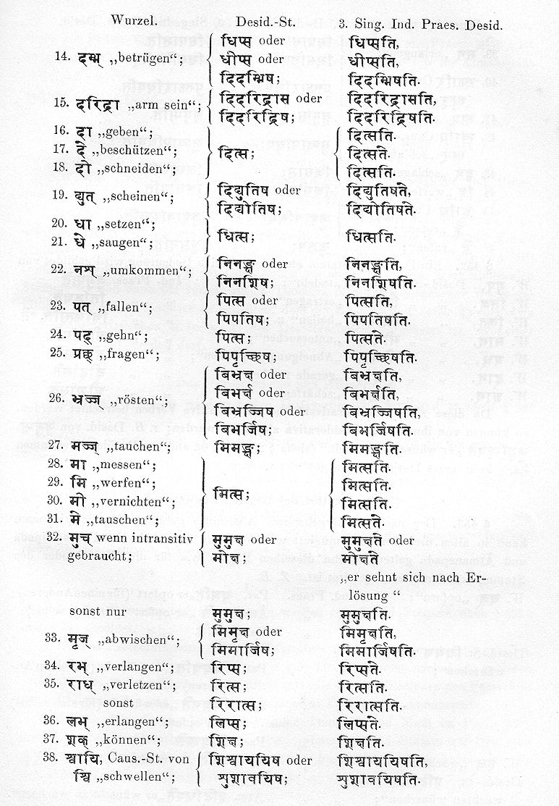
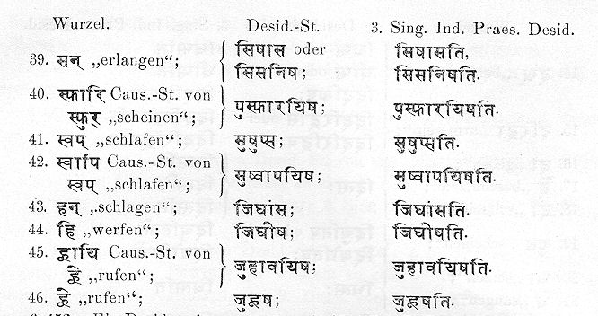

Zitierweise | cite as:
Payer, Alois <1944 - >: Sanskritkurs. -- 60. Lektion 60. -- Fassung vom 2009-03-12. -- URL: http://www.payer.de/sanskritkurs/lektion60.htm
Erstmals hier publiziert: 2009-03-06
Überarbeitungen: 2009-03-12 [Verbesserungen]
Anlass: Lehrveranstaltungen 1980 - 1984
©opyright: Dieser Text steht der Allgemeinheit zur Verfügung. Eine Verwertung in Publikationen, die über übliche Zitate hinausgeht, bedarf der ausdrücklichen Genehmigung des Verfassers
Dieser Text ist Teil der Abteilung Sanskrit von Tüpfli's Global Village Library
Falls Sie die diakritischen Zeichen nicht dargestellt bekommen, installieren Sie eine Schrift mit Diakritika wie z.B. Tahoma.
Die Devanāgarī-Zeichen sind in Unicode kodiert. Sie benötigen also eine Unicode-Devanāgarī-Schrift.
| परस्मैपदम् | आत्मनेपदम् | |
|---|---|---|
| 1. तृतीयः | -va | -vahe |
| 2. मध्यमः | -athur | -āthe |
| 3. प्रथमः | -atur | -āte |
बन्ध् 9P "binden"
परस्मैपदम् 1. तृतीयः बबन्धिव 2. मध्यमः बबन्धथुर् 3. प्रथमः बबन्धतुर्
भाष् 1Ā "sprechen"
आत्मनेपदम् 1. तृतीयः बभाषिवहे 2. मध्यमः बभाषाथे 3. प्रथमः बभाषाते
भिद् 7U "spalten"
परस्मैपदम् आत्मनेपदम् 1. तृतीयः बिभिदिव बिभिदिवहे 2. मध्यमः बिभिदथुर् बिभिदाथे 3. प्रथमः बिभिदतुर् बिभिदाते
नी 1U "führen"
परस्मैपदम् आत्मनेपदम् 1. तृतीयः निन्यिव निन्यिवहे 2. मध्यमः निन्यथुर् निन्याथे 3. प्रथमः निन्यतुर् निन्याते
स्तु 2U (अनिट्) "loben"
परस्मैपदम् आत्मनेपदम् 1. तृतीयः तुष्टुव तुष्तुवहे 2. मध्यमः तुष्टुवथुर् तुष्टुवाथे 3. प्रथमः तुष्टुवतुर् तुष्टुवाते
कृ 8U (अनिट्) "tun, machen"
परस्मैपदम् आत्मनेपदम् 1. तृतीयः चकृव चकृवहे 2. मध्यमः चक्रथुर् चक्राथे 3. प्रथमः चक्रतुर् चक्राते
स्मृ 1P "vergegenwärtigen"
परस्मैपदम् 1. तृतीयः सस्मरिव 2. मध्यमः सस्मरथुर् 3. प्रथमः सस्मरतुर्
दा 3U "geben"
परस्मैपदम् आत्मनेपदम् 1. तृतीयः ददिव ददिवहे 2. मध्यमः ददथुर् ददाथे * 3. प्रथमः ददतुर् ददाते * * identisch mit den entsprechenden Formen des Indikativ Präsens!
गम् 1U "gehen"
परस्मैपदम् आत्मनेपदम् 1. तृतीयः जग्मिव जग्मिवहे 2. मध्यमः जग्मथुर् जग्माथे 3. प्रथमः जग्मतुर् जग्माते
पच् 1U "garen"
परस्मैपदम् आत्मनेपदम् 1. तृतीयः पेचिव पेचिवहे 2. मध्यमः पेचथुर् पेचाथे 3. प्रथमः पेचतुर् पेचाते
क्रम् 1U "schreiten"
परस्मैपदम् आत्मनेपदम् 1. तृतीयः चक्रमिव चक्रमिवहे 2. मध्यमः चक्रमथुर् चक्रमाथे 3. प्रथमः चक्रमतुर् चक्रमाते
गण् 10P "zählen"
परस्मैपदम् 1. तृतीयः गणयां चकृव
गणयामासिव
गणयां बभूविव2. मध्यमः गणयां चक्रथुर्
गणयामासथुर्
गणयां बभूवथुर्3. प्रथमः गणयां चक्रतुर्
गणयामासतुर्
गणयां बभूवतुर्
आस् 2Ā "sitzen"
आत्मनेपदम् 1. तृतीयः आसां चकृवहे
आसामासिव
आसां बभूविवव्2. मध्यमः आसांव् चक्राथे
आसामासथुर्
आसां बभूवथुर्3. प्रथमः आसां चक्राते
आसामासतुर्
आसां बभूवतुर्व्
Bildung: schwacher Perfektstamm + vāṃs
Besteht der schwache Perfektstamm nur aus einer Silbe, dann wird der Bindevokal -i- angefügt. Bei einigen Perfekta ist der Bindevokal wahlweise.
Beispiele:
भिद् 7U बिभिद्वांस् "jemand, der gespalten hat" अस् 2P; 4P आसिवांस् "jemand, der gewesen ist" ; "jemand, der geworfen hat" दा 3U ददिवांस् (da-d-i-vāṃs) "jemand, der gegeben hat" पच् 1U पेचिवांस् "jemand, der gegart hat" गम् 1U जग्मिवांस् / जगन्वांस् "jemand, der gegangen ist"
Deklination:
Vor uṣ entfällt der Bindevokal -i-. Feminin: schwacher Stamm vor Vokal + -ī (wie देवी dekliniert) Beispiel: विदुषी "eine Wissende" |
Paradigmen siehe Kielhorn, Grammatik § 124:

| Die Stämme auf -añc/-ac sind Verbindungen von Präverbien usw. mit dem Wurzelnomen der Wurzel अञ्च् / अच् 1U "sich bewegen". |
Bildung:
Femininum: schwacher Stamm vor Vokal + -ī (wie देवी dekliniert) Beispiel: प्रतीची |


Hierher gehören:
प्रत्यञ्च् 3 "rückwärts, westlich"
अन्वञ्च् 3 "folgend"
उदञ्च् 3 "nach oben gerichtet, nördlich"
तिर्यञ्च् 3 "wagrecht gehend (von Tieren"
सम्यञ्च् 3 "richtig"
न्यञ्च् 3 "niedrig"
विष्वञ्च् 3 "nach allen Seiten gehend"
Bildung:
|
Hierher gehören:
Paradigma प्राञ्च् siehe oben!
| उदञ्च् 3 "nach oben gerichtet, nördlich" |
||
|
प्रत्यञ्च् 3 "rückwärts, westlich" |
 |
प्राञ्च्
3 "vorwärts gerichtet, östlich" |
| दक्षिण 3 rechts, südlich |
[Bildquelle: paul adrian. -- http://www.flickr.com/photos/81189455@N00/114519366/. -- Zugriff am 2009-03-06. -- Creative Commons Lizenz (Namensnennung, keine kommerzielle Nutzung, keine Bearbeitung)]
| Von jeder Wurzel sowie vom Kausativum
kann ein Desiderativum (सन्) gebildet werden. Das Desiderativum kann
in allen Zeiten und Modi des P, Ā und Passiv konjugiert werde.
Desiderativformen außerhalb des Präsensstamms sind aber sehr selten. Bedeutung:
|
कृ 8U चिकीर्षति "er wünscht zu tun" पत् 1P पिपतिषति "er ist im Begriffe, zu fallen" चुर् 10U चुचोरयिषति "er wünscht zu stehlen" बुध् Kaus. बुबोधयिषति "er wünscht zu belehren (zur Erkenntnis zu wecken)"
| Wurzeln der Präsensklassen 1 - 9: reduplizierte Wurzel + sa oder: reduplizierte Wurzel + i + ṣa Die Regeln zur Verwendung des Bindevokals -i- siehe bei Kielhorn, Grammatik § 443 - 445. Wurzeln der 10. Präsensklasse und Kausative: reduplizierter Präsensstamm + i + ṣa |
Gestalt der Wurzel:
|
Zur Reduplikation:
|
| Zu einigen Wurzeln werden Desiderative ohne desiderative Bedeutung gebildet. Zu diesen Desiderativen können Desiderative mit desiderativer Bedeutung gebildet werden. |
Liste bei Kielhorn, Grammatik § 452:

| Das Desiderativ ist - mit wenigen
Ausnahmen - P, Ā bzw. U, je nachdem, ob die zugrundeliegende Wurzel
(bzw. der zugrundeligende Verbalstamm) P, Ā oder U ist. Präsensstamm: Konjugation wie ein thematischer Stamm: यज् 1U:
Perfekt: periphrastisch:
Aorist: iṣ-Aorist:
Futur: सेट्
|
Zur Bildung von Nomina agentis auf -u aus dem Desiderativstamm siehe Lektion 54.
A) Lernen Sie in Kielhorn, Grammatik § 451 die unregelmäßigen Desiderativbildungen zu bisher gelernten Verben:



B) Bestimmen und übersetzen Sie ohne Hilfsmittel folgende Formen:
ददुषोः
अहिंसीः
देमथुः
वक्त्वा
अक्षथाः
मुमुषिषिष्यतः
अचिक्षंसेथाम्
अस्नाः
जिहिंसुषि
जिहिंसिषुणा
द्युभिः
जग्लिव
अतिस्तीर्षम्
अस्मेष्ठाः
ईशिष्व
रुरुषतुः
रुरुषुः
रुरुषिषुः
अपिप्रीणताम्
अपिप्रीषतम्
पिप्रियतुः
तिस्रः
अदांक्ष्टाम्
असिसीर्ष्यत
बभासाते
बिभासिषेथे
अबीभणत
चकर्त
चकर्थ
दिद्युते
दिद्युतिषे
चुच्यूषवे
दित्सामि
अचीकृतम्
विजिगीषौ
पित्सेथे
उदीचि
संगणय्य
अतिस्तराव
त्रिलोक्याः
अहः
जग्मुषः
अताप्स्व
ईशिशिषाञ्चक्रे
ईशाञ्चक्रे
ईशयाञ्चक्रे
षण्णाम्
अघुक्षम्
अष्टौ
प्साथः
अवाचः
ईयुषे
Zu Lektion 61